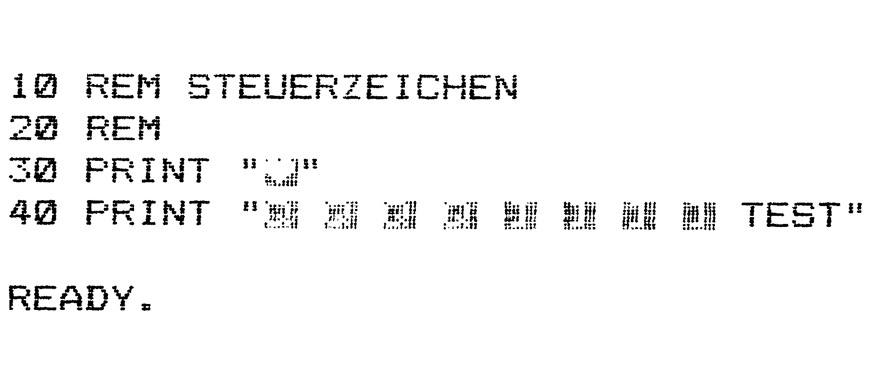

C 64-Basic im Dialog
Auf unserer kleinen Exkursion durch die Sprache Ihres Computers finden Sie diesmal alles zur Bildschirmein-/ Ausgabe mit dem Basic 2.0 des C 64.
Mit das Wichtigste beim Programmieren von Computern ist die Ein- und Ausgabe am Bildschirm. Was nützt das beste selbsterstellte Programm, wenn es nicht möglich ist, mit ihm in Kontakt zu treten. Dies kann über den Bildschirm erreicht werden. Das Basic des Commodore 64 stellt dafür einige leistungsfähige Befehle zur Verfügung, die im folgenden ausführlich erklärt werden. Die hier wiedergegebenen Informationen sind zwar auch teilweise im Handbuch des C 64 enthalten, werden aber noch vertieft und weiter ausgebaut.
Print-Voerigtionen
Den wichtigsten Befehl zur Bildschirmausgabe, PRINT, haben Sie bereits in der letzten Ausgabe des 64'er-Magazins mit den Variablen kennengelernt. Allerdings traten dabei die Möglichkeiten, die dieser Befehl bietet, nur am Rande hervor. PRINT bietet dem Programmierer eine Vielzahl von Varianten zur Manipulation der Bildschirmausgabe. So können Sie übersichtliche Masken aufbauen oder eine Menüsteuerung realisieren. Sie wissen bereits, wie Sie eine Textkonstante auf den Bildschirm bringen. In der Anweisung können aber auch Steuerzeichen untergebracht werden. Beschäftigen wir uns zunächst mit diesen Zeichen. Wenn Sie im Direktmodus ein Anführungszeichen eingeben und dann zum Beispiel die Cursor-Tasten betätigen, erscheint statt der erwarteten Cursor-Bewegung nur ein seltsames Zeichen aufdem Bildschirm. Schließen Sie die Zeile mit einem weiteren Änführungszeichen ab, funktioniert alles wieder normal. Nun, was da zwischen den Anführungszeichen am Bildschirm erscheint, sind die Steuerzeichen. Diese können mit dem PRINT-Befehl programmiert werden. Sehen wir uns das Ganze an einem kleinen Beispiel (Listing l)an. Dasreverse Herz in Zeile 30 steht für Bildschirm löschen und Cursor nach links oben. (<SHIFT+CLR/HOME>).
10 REM STEUERZEICHEN
20 REM
30 PRINT "{CLR}"
40 PRINT "{DOWN} {DOWN} {DOWN} {DOWN} {UP} {UP} {UP} {UP} TEST"
READY.

Wenn der Computer auf diese Zeile stößt, wird nicht etwa dieses Zeichen auf den Bildschirm gebracht, sondern ein Code gesendet, der das Löschen des Bildschirms veranlaßt. Wie kann man die Sache mit dem Code verstehen? Intern werden alle Zeichen nach einer bestimmten Tabelle in Zahlen umgewandelt. Es steht also nie ein »A« im Speicher, sondernimmer die Zahl, derdas »A« laut Tabelle entspricht. Die Tabelle, in der alle darstellbaren Zeichen und die Steuerzeichen mit Ihren Nummern stehen, nenntman ASCII-Tabelle (American Standard Code for Information Interchange = Amerikanische Standardwerte für Informationsaustausch). So ist beispielsweise dem Steuerzeichen für Bildschirmlöschen beim © 64 die Zahl 147 zugeordnet. In Zeile 40 des kleinen Beispiels finden Sie nun eine ganze Menge dieser Steuerzeichen in einer PRINT-Anweisung. Vier mal das Zeichen für <CRSR>-unten und vier mal für <CRSR>-oben. Die Leerzeichen sind nur wegen der Übersichtlichkeit eingefügt. Wenn Sie dieses Programm mit RUN starten, werden Sie feststellen, daß als erstes der Bildschirm gelöscht und dann der Oursor in Richtung Bildschirmmitte positioniert wird.
Weniger gut ist die schlechte Lesbarkeit dieser Steuerzeichen in ausgedruckten Listings. Wenn Sie ein Basic-Programm aus dem 64'er-Magazin eingeben wollen, werden Sie feststellen, daß keines der jetzt bekannten Steuerzeichen zu finden ist. Das Programm wird vor dem Ausdruck erst durch einen »Cursor-Translator« aufbereitet, so daß für die Steuerzeichen gut lesbare und leicht zu interpretierende Zeichen erscheinen. Bitte geben Sie diese Zeichen beim Abtippen niemals mit ein, sondern immer nur die jeweiligen Steuerzeichen. Eine genaue Anleitung zum Abtippen der veröffentlichten Listings finden Sie in Ausgabe 10/86 auf Seite 18. Einen Nachteil hat die Positionierung des Cursors mit Hilfe von Steuerzeichen: Sie ist unkomfortabel und nur sehr schlecht lesbar. Es gibt eine Möglichkeit, den Cursor direkt an die gewünschte Bildschirmstelle zu setzen. Dazu müssen Sie die folgende Basic-Routine in Ihre Programme einbauen.
10 POKE 781,ZEILE
20 POKE 782,SPALTE
30 SYS 65520
40 PRINT "TEST"
Der Variable »ZEILE« müssen Sie jetzt noch die gewünschte Bildschirmzeile und der Variable »SPALTE« die Spalte zuweisen. Auf die Bedeutung von POKE und SYS soll hier nicht weiter eingegangen werden, deren Bedeutung entnehmen Sie bitte dem C 64-Handbuch.
Soviel zu den Steuerzeichen und dem Abtippen von Listings.
Natürlich ist das oben Beschriebene noch lange nicht alles zum PRINT-Befehl. Dieser ist noch weitaus umfangreicher.
Bildschirm-Design
Oft ist es notwendig, die Ausgabe aufdemBildschirm tabellenartig zu gestalten. Wenn zum Beispiel die Werte einer Funktion ausgegeben werden, ist meist eine Bildschirmtabelle notwendig. Der PRINT-Befehl bietet hierzu mehrere Möglichkeiten. Zum einen steht die zusätzliiche TAB-Funktion des Basic 2.0 zur Verfügung. Diese wird einfach an den PRINT-Befehl angehängt. Sie können in einer Befehlszeile sogar mehrere Tabulatoren setzen. Das Ganze sieht dann folgendermaßen aus:
10 REM PRINT MIT TAB
20 REM
30 PRINT TAB(10)"A";
40 PRINT TAB(15) "B";
50 PRINT TAB(20) "C"
60 END
Was in Zeile 30 genau passiert, sehen wir uns jetzt näher an. Der Cursor wird auf Spalte 10 der aktuellen Zeile positioniert und der Buchstabe »A« ausgegeben. Auf dieselbe Weise werden auch die anderen Buchstaben an die durch die TAB-Anweisung bestimmte Stelle gebracht. Wichtig ist noch der Strichpunkt am Ende jeder Zeile. Dieser darf auf keinen Fall vergessen werden, da der Cursor sonst in die nächste Bildschirmzeile springt.
Es gibt noch eine andere Möglichkeit, Tabellen auf den Bildschirm zu zaubern. Dazu gleich wieder ein kleines Beispiel:
10 PRINT "1","2","3","4"
Die Konstanten sind nur mit Kommata voneinander getrennt. Das Komma bewirkt jedesmaleine Verschiebung um zehn Spalten. So entsteht ebenfalls eine Tabelle auf dem Monitor. Im Gegensatz zur TAB-Anweisung können Sie den Abstand hier nicht manipulieren.
PRINT bietet noch einen Weg zur Steuerung der Ausgabe. Dazu existiert im Basic 2.0 die Anweisung SPC. Diese erzeugt Leerstellen. Die genaue Funktionsweise sehen Sie an folgendem Beispiel:
10 PRINT SPC(5) "A"SPC(5) "B"
Vor der Ausgabe des Zeichens »A« werden erst fünf Zeichen auf dem Bildschirm übersprungen. Genauso wie beim Zeichen »B«. Während TAB immer vom Anfang der aktuellen Zeile ausgehend positioniert, wird beiSPC immer ab der momentanen Cursor-Plazierung gezählt.
Wir haben in den letzten Beispielen bereits des öfteren den Strichpunkt verwendet. Dieser wird nicht nurzur Trennung der einzelnen Anweisungen, wie SPC und TAB, im PRINT-Befehl verwendet, sondern verhindert auch den Zeilenvorschub. Am besten läßt sich das unter Verwendung des INPUT-Befehls erklären.
Von der Tastatur zum Computer
INPUT spielt in allen Basic-Versionen eine Schlüsselrolle. Mit diesem Befehl werden Daten, im Gegensatz zu PRINT, von der Tastatur geholt und auf dem Bildschirm angezeigt. Sie haben INPUT bereits bei der Beschreibung der Variablen kennengelernt. Die ganze Leistungsfähigkeit des Befehls wurde dabei bei weitem nicht erfaßt. Als erstes erfahren Sie jetzt einiges über die Funktionsweise. Stößt der Interpreter in einem Basic-Programm auf den INPUT-Befehl, meldetersichalserstes mit einem Fragezeichen auf dem Bildschirm. Der Computer verlangt jetzt von Ihnen eine Eingabe. Nachdem Sie Ihre Daten eingetippt haben, werden sie durch Drücken von <RETURN> der Variable zugewiesen, die nach dem INPUT-Befehl im Programm steht. Bei der Eingabe müssen Sie darauf achten, daß die Daten dem Typus der Variable entsprechen. Also bei Integer-Variablen nur ganzzahlige Werte eingeben und so weiter. Nun zu einigen Besonderheiten des INPUT-Befehls.
Hier kommt auch wieder der Strichpunkt ins Spiel.
Strichpunkt
Nehmen wir an, Ihr Programm soll eine Zahl in die Variable »ZAHL« übernehmen. Es wäre nicht sinnvoll, nur einen INPUT-Befehl zu programmieren. Vor der eigentlichen Eingabe muß also noch ein Kommentar stehen, der den Anwender darauf hinweist, was eingegeben werden soll. Sehen wir uns ein entsprechendes Listing näher an:
10 PRINT "BITTE GEBEN SIE
EINE ZAHL EIN: ";
20 INPUT ZAHL
Wenn Sie dieses Programm mit RUN starten, werden Sie feststellen, daß das Fragezeichen von INPUT direkt hinter dem Doppelpunkt erscheint. Dieser Effekt wird durch den Strichpunkt erzeugt, der verhindert, daß der Cursor an den Anfang der nächsten Zeile springt. Entfernen Sie den Strichpunkt, so steht das Fragezeichen am Anfang der nächsten Bildschirmzeile.
Der INPUT-Befehl kann auch als Kombination zwischen sich selbst und PRINT verwendet werden. Das heißt, Sie benötigen nicht zwei Programmzeilen, um das obige Problem zu lösen, sondern nur noch eine.
10 INPUT "BITTE GEBEN
SIE EINE ZAHL EIN: ";5ZAHL
Sie sehen, die Wirkung ist tatsächlich die gleiche. Der Programmierer kann sich auf diese Weise viele Zeilen sparen.
Damit ist die Fähigkeit des INPUT-Befehls allerdings noch nicht erschöpft. Es be‚steht die Möglichkeit, mehrere Variablen in einer Anweisung zu verarbeiten. Geben Sie zur Demonstration folgende Programmzeile ein:
10 INPUT "DREI ZAHLEN BITTE:
"";A,B,C
Der Computer meldet sich nach dem Starten des Programms in schon fast gewohnter Manier mitdemF'ragezeichen hinter dem Text. Geben Sie nun die erste Zahl ein und drücken dann <RETURN>, erscheinen aber in der nächsten Zeile zwei Fragezeichen. Der C 64 erwartet die Eingabe der zweiten Zahl, die der Variablen B zugewiesen wird. Dasselbe passiert dann noch einmal für die Eingabe der dritten Zahl. Sie können die Zahlen auch gleich mit Kommata getrennt in der ersten Zeile nach dem Fragezeichen eingeben, die Zuweisung zu den Variablen ist dieselbe.
Früher oder später werden Sie feststellen, daß bei der Eingabe von Kommata, Doppelpunkten und Strichpunkten in eine String-Variable die Meldung »EXTRA IGNORED« am Bildschirm erscheint. Das liegt daran, daß diese Zeichen als Trennungszeichen interpretiert werden. Der String wird nach diesem Zeichen einfach abgeschnitten. Diesläßt sich wiederum durch eine kleine Routine vermeiden.
10 POKE 198,1
20 POKE 631,34
30 INPUT A$
Wenn Sie diese Routine verwenden, erscheint nach dem Fragezeichen zusätzlich ein Anführungszeichen. Nach diesem Zeichen können Sie ohne Fehlermeldung auch die Trennungszeichen mit eingeben. Denselben Effekt erreichen Sie noch auf eine andere Art. Sie arbeiten ganz normal mit dem INPUT-Befehl, beginnen Ihren Eingabestring aber mit einem Anführungszeichen.
Damit wäre der INPUT-Befehl ausreichend erklärt und kann jetzt ohne Probleme voll genutzt werden.
GET im Einsatz
Eine Sonderstellung nimmt der GET-Befehl ein. Er wartet nicht, wie der INPUT-Befehl, bis Daten eingegeben werden, sondern fragt nur ab, ob eine Taste gedrückt wurde. Mit GET kann einer Variablen nur ein einzelnes Zeichen zugewiesen werden. Doch was nützt ein Befehl, der nur ein Zeichen verarbeiten kann? GET eignet sich besonders gut, um Sicherheitsabfragen und Menüsteuerungen aufzubauen. Hierzu ein kleines Beispiel.
10 PRINT "BITTE IHRE
EINGABE"
20 GET A$:IF A$ = "" THEN 20
30 PRINT "SIE HABEN "A$"
GEDRUECKT"
In Zeile 20 steht der GET Befehl. Die nachstehende IF. THEN-Schleife fragt lediglich ab, ob eine Taste gedrückt wurde. Ist das nicht der Fall, wird automatisch wieder an den Anfang der Zeile 20 gesprungen. In dem Moment, in dem eine beliebige Taste gedrückt wird, ist die IF-Abfrage negativ und Zeile 30trittin Aktion. Aufdie IF-Abfrage selbst wollen wir hier nicht näher eingehen, diese wird im nächsten Teil ausführlich behandelt werden. In Zeile 30 finden Sie eine bisher noch nicht erwähnte Besonderheit des PRINT-Befehls. Man kann verschiedene Textkonstanten und Variablen miteinander verknüpfen. Diese werden lediglich, wie oben »A$« in Zeile 30, mit eingefügt. Natürlich können wir hier nicht die volle Leistungsfähigkeit des GET-Befehls demonstrieren, dazu sind noch tiefere Basic-Kenntnisse vonnöten, die im weiteren Verlauf des Kurses ausführlich behandelt werden.
Langsam, aber sicher ...
Dabei wird immer wieder auf die bereits angewandten Befehle und Kenntnisse zurückgegriffen und diese weiter ausgebaut. Anfangs bleiben dabei leider einige wichtige Anwendungen der einzelnen Basic-Bestandteile auf der Strecke. Doch für den Einsteiger ist es besser langsam anzufangen, als sofort mit einer Masse an Informationen überhäuft zu werden. Mit etwas Geduld können Sie zum Schluß richtig in Basic programmieren, da Sie dann über das nötige Hintergrundwissen der genauen Funktionsweise einzelner Bestandteile verfügen.
(rf)